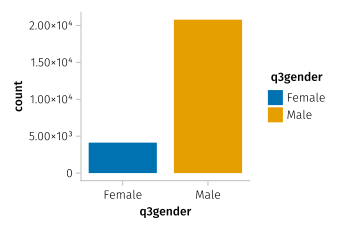
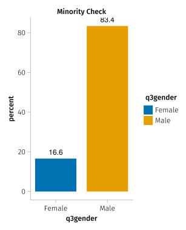
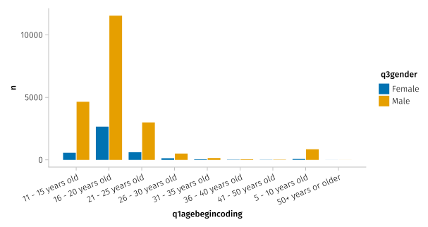
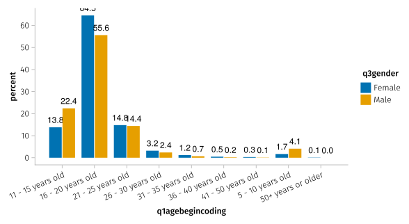
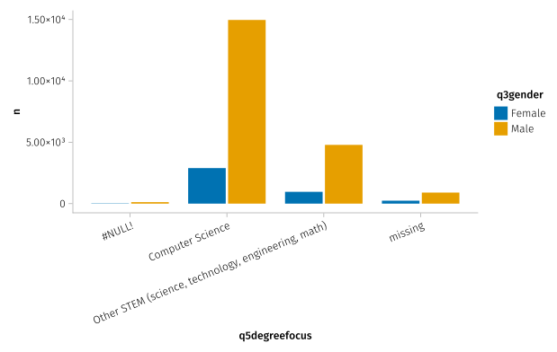
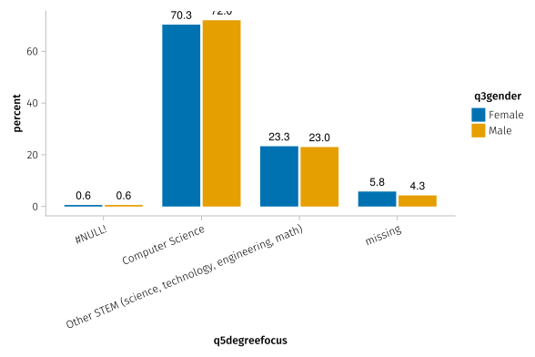
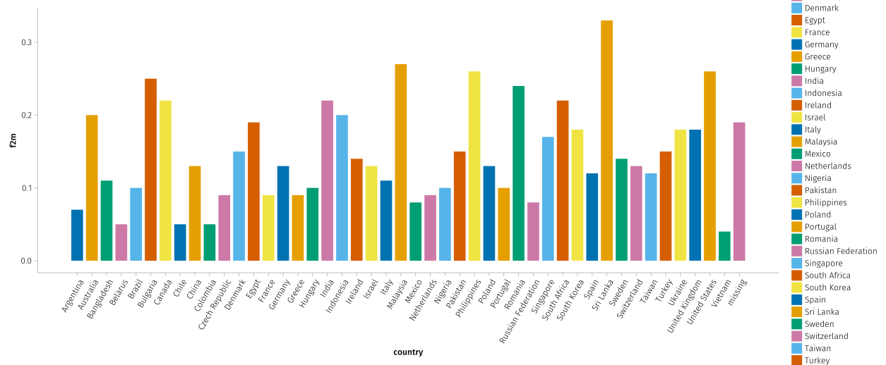
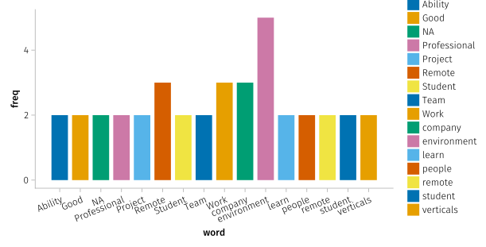

include("../utils.jl") # import load_csv method[ Info: loading success!include("../utils.jl") # import load_csv method[ Info: loading success!df =load_csv("HackerRank-Developer-Survey-2018-Values",false)
@pipe names(df)|>lowercase.(_)|>rename!(df,_);@chain df begin
@slice(1:5)
end| Row | respondentid | startdate | enddate | countrynumeric2 | q1agebegincoding | q2age | q3gender | q4education | q0004_other | q5degreefocus | q0005_other | q6learncodeuni | q6learncodeselftaught | q6learncodeacceltrain | q6learncodedontknowhowtoyet | q6learncodeother | q0006_other | q7level1 | q8joblevel | q0008_other | q8student | q9currentrole | q0009_other | q10industry | q0010_other | q12jobcritpreftechstack | q12jobcritcompmission | q12jobcritcompculture | q12jobcritworklifebal | q12jobcritcompensation | q12jobcritproximity | q12jobcritperks | q12jobcritsmartpeopleteam | q12jobcritimpactwithproduct | q12jobcritinterestproblems | q12jobcritfundingandvaluation | q12jobcritstability | q12jobcritprofgrowth | q12jobcritother | q0012_other | q13empmeaswhiteboard | q13empmeashackerrank | q13empmeasothercodingchallenge | q13empmeastechphoneint | q13empmeastakehomeproject | q13empmeasresume | q13empmeaspastwork | q13empmeasother | q0013_other | q14goodreflecabilities | q15level2 | q16hiringmanager | q17hirchainterviews | q17hirchahardassessskills | q17hirchanotenoughtalent | q17hirchanodiverscandidates | q17hirchacompfromcompanies | q17hirchajobdescript | q17hirchaother | q0017_other | q18numdevelophirewithinnextyear | q19taltoolresumescreen | q19taltoolreferral | q19taltoolhackerrank | q19taltoolotherprobsolv | q19taltoolperstest | q19taltoolremoteorliveinttool | q19taltooloutsourcehumintpanel | q19taltoolother | q0019_other | q20candyearexp | q20candcompsciencedegree | q20candcodingbootcamp | q20candskillcert | q20candhackerrankactivity | q20candothercodingcommact | q20candgithubpersproj | q20candopensourcecontrib | q20candhackathonpart | q20candprevworkexp | q20candprestigedegree | q20candlinkinskills | q20candgithubpersproj2 | q20other | q0020_other | q21corecompprobsolv | q21corecompproglang | q21corecompframeworkprof | q21corecompdebugging | q21corecompcodebasenav | q21corecompperfopt | q21corecompcodereview | q21corecompdatabasedesign | q21corecompsysdesign | q21corecomptesting | q22langprofagnostic | q22langprofc | q22langprofcplusplus | q22langprofjava | q22langprofpython | ⋯ |
|---|---|---|---|---|---|---|---|---|---|---|---|---|---|---|---|---|---|---|---|---|---|---|---|---|---|---|---|---|---|---|---|---|---|---|---|---|---|---|---|---|---|---|---|---|---|---|---|---|---|---|---|---|---|---|---|---|---|---|---|---|---|---|---|---|---|---|---|---|---|---|---|---|---|---|---|---|---|---|---|---|---|---|---|---|---|---|---|---|---|---|---|---|---|---|---|---|---|---|---|---|---|
| Int64 | String15 | String15 | String31? | String31 | String31 | String15 | String | String? | String? | String? | String31? | String? | String? | String31? | String31? | String? | String7 | String31? | String? | String15? | String31? | String? | String31? | String? | String31? | String15? | String15? | String31? | String15? | String31? | String7? | String31? | String31? | String31? | String31? | String31? | String? | String31? | String? | String31? | String31? | String? | String31? | String31? | String7? | String15? | String31? | String? | String15 | String | String3 | String31? | String? | String31? | String31? | String? | String31? | String31? | String? | String15 | String31? | String15? | String31? | String? | String31? | String31? | String? | String31? | String? | String31? | String? | String31? | String31? | String31? | String31? | String7? | String31? | String31? | String31? | String31? | String31? | String31? | String31? | String? | String15? | String? | String31? | String15? | String31? | String31? | String31? | String15? | String15? | String7? | String31? | String7? | String7? | String7? | String7? | ⋯ | |
| 1 | 6464453728 | 10/19/17 11:51 | 10/20/17 12:05 | South Korea | 16 - 20 years old | 18 - 24 years old | Female | Some college | missing | Computer Science | statistics, computer science | School or university | Self-taught (i.e. books, online) | missing | missing | missing | missing | C | Student | missing | Students | Student | missing | missing | student | missing | missing | missing | Good work/life balance | Compensation | missing | missing | missing | missing | missing | missing | missing | Professional growth and learning | missing | missing | Whiteboard Interview | missing | missing | missing | missing | Resume | missing | missing | missing | Acceptable | prints "Hello, World!" n times | No | #NULL! | #NULL! | #NULL! | #NULL! | #NULL! | #NULL! | #NULL! | missing | #NULL! | #NULL! | #NULL! | #NULL! | #NULL! | #NULL! | #NULL! | #NULL! | #NULL! | missing | #NULL! | #NULL! | #NULL! | #NULL! | #NULL! | #NULL! | #NULL! | #NULL! | #NULL! | #NULL! | #NULL! | #NULL! | #NULL! | #NULL! | missing | #NULL! | #NULL! | #NULL! | #NULL! | #NULL! | #NULL! | #NULL! | #NULL! | #NULL! | #NULL! | #NULL! | #NULL! | #NULL! | #NULL! | #NULL! | ⋯ |
| 2 | 6478031510 | 10/26/17 6:18 | 10/26/17 7:49 | Ukraine | 16 - 20 years old | 25 - 34 years old | Male | Post graduate degree (Masters, PhD) | missing | Other STEM (science, technology, engineering, math) | missing | School or university | Self-taught (i.e. books, online) | missing | missing | missing | missing | C | missing | Test Automation Lead | missing | Software Test Engineer | missing | Financial Services | missing | Preferred tech stack | Company mission | Company culture | Good work/life balance | Compensation | missing | missing | Smart people / team | missing | Interesting problems to solve | missing | missing | Professional growth and learning | #NULL! | missing | missing | missing | missing | Technical Phone Interview | Take Home Project | Resume | missing | missing | missing | Good | prints "Hello, World!" n times | Yes | missing | missing | Not enough talent | Not enough diverse candidates | missing | missing | missing | missing | 0 - 10 | Resume screening | Referrals | missing | Other problem solving, logic challenges | missing | Remote, live interviewing tool | missing | missing | missing | missing | missing | Coding bootcamp education | missing | missing | missing | missing | missing | missing | Previous work experience | missing | missing | Github or personal projects | missing | missing | Problem Solving | Programming Language Proficiency | missing | missing | missing | missing | Code Review Capability | missing | missing | Testing | missing | missing | missing | Java | missing | ⋯ |
| 3 | 6464392829 | 10/19/17 10:44 | 10/19/17 10:56 | Malaysia | 11 - 15 years old | 12 - 18 years old | Female | Some college | missing | Other STEM (science, technology, engineering, math) | missing | School or university | missing | Accelerated training (i.e. bootcamp) | missing | missing | missing | C | Student | missing | Students | Student | missing | Education | missing | missing | missing | missing | missing | missing | missing | missing | missing | missing | Interesting problems to solve | missing | missing | Professional growth and learning | missing | missing | missing | missing | missing | missing | missing | missing | missing | Other (please specify) | Just a student didn't have job yet | Acceptable | prints "Hello, World!" n times | No | #NULL! | #NULL! | #NULL! | #NULL! | #NULL! | #NULL! | #NULL! | missing | #NULL! | #NULL! | #NULL! | #NULL! | #NULL! | #NULL! | #NULL! | #NULL! | #NULL! | missing | #NULL! | #NULL! | #NULL! | #NULL! | #NULL! | #NULL! | #NULL! | #NULL! | #NULL! | #NULL! | #NULL! | #NULL! | #NULL! | #NULL! | missing | #NULL! | #NULL! | #NULL! | #NULL! | #NULL! | #NULL! | #NULL! | #NULL! | #NULL! | #NULL! | #NULL! | #NULL! | #NULL! | #NULL! | #NULL! | ⋯ |
| 4 | 6481629912 | 10/27/17 1:51 | 10/27/17 2:05 | Curaçao | 11 - 15 years old | 12 - 18 years old | Male | College graduate | missing | Computer Science | missing | missing | Self-taught (i.e. books, online) | missing | missing | missing | missing | C | Student | missing | Students | Student | missing | missing | student | missing | missing | Company culture | missing | missing | Proximity to where you live | missing | missing | missing | Interesting problems to solve | missing | missing | missing | missing | missing | missing | missing | missing | missing | missing | missing | missing | Other (please specify) | n.a. | Acceptable | prints "Hello, World!" n times | No | #NULL! | #NULL! | #NULL! | #NULL! | #NULL! | #NULL! | #NULL! | missing | #NULL! | #NULL! | #NULL! | #NULL! | #NULL! | #NULL! | #NULL! | #NULL! | #NULL! | missing | #NULL! | #NULL! | #NULL! | #NULL! | #NULL! | #NULL! | #NULL! | #NULL! | #NULL! | #NULL! | #NULL! | #NULL! | #NULL! | #NULL! | missing | #NULL! | #NULL! | #NULL! | #NULL! | #NULL! | #NULL! | #NULL! | #NULL! | #NULL! | #NULL! | #NULL! | #NULL! | #NULL! | #NULL! | #NULL! | ⋯ |
| 5 | 6488385057 | 10/31/17 11:46 | 10/31/17 11:59 | missing | 16 - 20 years old | 25 - 34 years old | Female | College graduate | missing | missing | Fine Arts & Computer Science | School or university | Self-taught (i.e. books, online) | missing | missing | missing | missing | C | Senior developer | missing | missing | Front-end Developer | missing | Technology | missing | missing | Company mission | missing | Good work/life balance | missing | missing | missing | Smart people / team | missing | missing | missing | missing | missing | #NULL! | missing | missing | missing | missing | missing | missing | missing | missing | Other (please specify) | Intern work for a different department in same company | Good | prints "Hello, World!" n times | Yes | missing | missing | Not enough talent | missing | Competition from other companies | Calibrating the job description | missing | missing | 0 - 10 | Resume screening | Referrals | missing | missing | missing | missing | missing | missing | missing | Years of experience | missing | missing | missing | missing | missing | missing | missing | missing | Previous work experience | missing | missing | Github or personal projects | missing | missing | Problem Solving | Programming Language Proficiency | missing | missing | missing | missing | missing | missing | missing | missing | missing | missing | missing | missing | missing | ⋯ |
@pipe describe(df)|>select(_,[:variable,:nmissing,:eltype])|>_[86:95,:]| Row | variable | nmissing | eltype |
|---|---|---|---|
| Symbol | Int64 | Type | |
| 1 | q21corecompprobsolv | 399 | Union{Missing, String15} |
| 2 | q21corecompproglang | 3398 | Union{Missing, String} |
| 3 | q21corecompframeworkprof | 5946 | Union{Missing, String31} |
| 4 | q21corecompdebugging | 4154 | Union{Missing, String15} |
| 5 | q21corecompcodebasenav | 6657 | Union{Missing, String31} |
| 6 | q21corecompperfopt | 5053 | Union{Missing, String31} |
| 7 | q21corecompcodereview | 5034 | Union{Missing, String31} |
| 8 | q21corecompdatabasedesign | 6199 | Union{Missing, String15} |
| 9 | q21corecompsysdesign | 4679 | Union{Missing, String15} |
| 10 | q21corecomptesting | 5103 | Union{Missing, String7} |
size(df)(25090, 251)df=clean_df=@chain df begin
@filter(q3gender in ["Male","Female"])
end
let
set_aog_theme!()
axis = (width = 225, height = 225)
gender_frequency = data(clean_df) * frequency() * mapping(:q3gender,color = :q3gender)
draw(gender_frequency; axis = axis)
end
percent_data=@chain clean_df begin
@group_by(q3gender)
@summarize(n=nrow())
@mutate(percent=round(n/sum(n)*100,digits=1))
end| Row | q3gender | n | percent |
|---|---|---|---|
| String15 | Int64 | Float64 | |
| 1 | Female | 4122 | 16.6 |
| 2 | Male | 20774 | 83.4 |
let
set_aog_theme!()
axis = (width = 225, height = 400,title="Minority Check")
gender_frequency = data(percent_data)* mapping(:q3gender,:percent,color = :q3gender)*visual(BarPlot,bar_labels = :y)
draw(gender_frequency; axis = axis)
end
begin_programm_percent=@chain df begin
@filter(q1agebegincoding !="#NULL!")
@group_by(q3gender, q1agebegincoding)
@summarize(n=nrow())
@ungroup
@group_by(q3gender)
@mutate(percent=round(n/sum(n)*100,digits=1))
@ungroup
end| Row | q3gender | q1agebegincoding | n | percent |
|---|---|---|---|---|
| String15 | String31 | Int64 | Float64 | |
| 1 | Female | 16 - 20 years old | 2657 | 64.5 |
| 2 | Female | 11 - 15 years old | 569 | 13.8 |
| 3 | Female | 26 - 30 years old | 130 | 3.2 |
| 4 | Female | 21 - 25 years old | 609 | 14.8 |
| 5 | Female | 5 - 10 years old | 71 | 1.7 |
| 6 | Female | 36 - 40 years old | 19 | 0.5 |
| 7 | Female | 31 - 35 years old | 48 | 1.2 |
| 8 | Female | 41 - 50 years old | 12 | 0.3 |
| 9 | Female | 50+ years or older | 3 | 0.1 |
| 10 | Male | 16 - 20 years old | 11543 | 55.6 |
| 11 | Male | 11 - 15 years old | 4651 | 22.4 |
| 12 | Male | 41 - 50 years old | 22 | 0.1 |
| 13 | Male | 5 - 10 years old | 848 | 4.1 |
| 14 | Male | 21 - 25 years old | 2998 | 14.4 |
| 15 | Male | 26 - 30 years old | 506 | 2.4 |
| 16 | Male | 36 - 40 years old | 47 | 0.2 |
| 17 | Male | 31 - 35 years old | 144 | 0.7 |
| 18 | Male | 50+ years or older | 3 | 0.0 |
let
set_aog_theme!()
axis = (width = 600, height =300,xticklabelrotation = pi/8)
plt=data(begin_programm_percent)*mapping(:q1agebegincoding,:n,color = :q3gender, dodge = :q3gender)*visual(BarPlot)
draw(plt; axis = axis)
end
let
set_aog_theme!()
axis = (width = 600, height =300,xticklabelrotation = pi/8)
plt=data(begin_programm_percent)*mapping(:q1agebegincoding,:percent,color = :q3gender, dodge = :q3gender)*visual(BarPlot;bar_labels = :y)
draw(plt; axis = axis)
end
from first dodge we can see at the age of bracket of 11 - 15yrs, 22.4% of men started coding, only 13.8% of women have done so.
college_cs_data=@chain df begin
#@filter(q5degreefocus !="#NULL!")
@group_by(q3gender, q5degreefocus)
@summarize(n=nrow())
@ungroup
@group_by(q3gender)
@mutate(percent=round(n/sum(n)*100,digits=1))
@ungroup
end| Row | q3gender | q5degreefocus | n | percent |
|---|---|---|---|---|
| String15 | String? | Int64 | Float64 | |
| 1 | Female | Computer Science | 2896 | 70.3 |
| 2 | Female | Other STEM (science, technology, engineering, math) | 962 | 23.3 |
| 3 | Female | missing | 240 | 5.8 |
| 4 | Female | #NULL! | 24 | 0.6 |
| 5 | Male | Other STEM (science, technology, engineering, math) | 4787 | 23.0 |
| 6 | Male | Computer Science | 14964 | 72.0 |
| 7 | Male | missing | 901 | 4.3 |
| 8 | Male | #NULL! | 122 | 0.6 |
# let
# set_aog_theme!()
# axis = (width = 600, height = 300,xticklabelrotation = pi/8)
# plt=data(college_cs_data)*frequency()*mapping(:q5degreefocus,color = :q3gender, dodge = :q3gender)
# draw(plt; axis = axis)
# end
let
set_aog_theme!()
axis = (width = 600, height =300,xticklabelrotation = pi/8)
plt=data(college_cs_data)*mapping(:q5degreefocus,:n,color = :q3gender, dodge = :q3gender)*visual(BarPlot)
draw(plt; axis = axis)
end
let
set_aog_theme!()
axis = (width = 600, height =300,xticklabelrotation = pi/8)
plt=data(college_cs_data)*mapping(:q5degreefocus,:percent,color = :q3gender, dodge = :q3gender)*visual(BarPlot;bar_labels = :y)
draw(plt; axis = axis)
end
df5=@chain clean_df begin
@group_by(countrynumeric2)
@mutate(count=nrow())
@filter(count>50)
@ungroup
@group_by(countrynumeric2,q3gender)
@summarize(count=nrow())
@ungroup
@pivot_wider(_, names_from = q3gender, values_from = count)
@mutate(f2m=round(Female/Male,digits=2))
@rename(country=countrynumeric2)
@arrange(desc(f2m))
end| Row | country | Female | Male | f2m |
|---|---|---|---|---|
| String31? | Int64? | Int64? | Float64 | |
| 1 | Sri Lanka | 36 | 109 | 0.33 |
| 2 | Malaysia | 18 | 66 | 0.27 |
| 3 | United States | 1000 | 3889 | 0.26 |
| 4 | Philippines | 19 | 73 | 0.26 |
| 5 | Bulgaria | 18 | 73 | 0.25 |
| 6 | Romania | 33 | 139 | 0.24 |
| 7 | Canada | 114 | 525 | 0.22 |
| 8 | South Africa | 17 | 79 | 0.22 |
| 9 | India | 1453 | 6601 | 0.22 |
| 10 | Indonesia | 65 | 319 | 0.2 |
| 11 | Australia | 26 | 132 | 0.2 |
| 12 | missing | 626 | 3316 | 0.19 |
| 13 | Egypt | 19 | 99 | 0.19 |
| ⋮ | ⋮ | ⋮ | ⋮ | ⋮ |
| 35 | Hungary | 11 | 105 | 0.1 |
| 36 | Netherlands | 11 | 117 | 0.09 |
| 37 | Czech Republic | 5 | 53 | 0.09 |
| 38 | Greece | 6 | 67 | 0.09 |
| 39 | France | 12 | 136 | 0.09 |
| 40 | Mexico | 13 | 164 | 0.08 |
| 41 | Russian Federation | 27 | 347 | 0.08 |
| 42 | Argentina | 7 | 99 | 0.07 |
| 43 | Colombia | 4 | 77 | 0.05 |
| 44 | Belarus | 3 | 55 | 0.05 |
| 45 | Chile | 3 | 59 | 0.05 |
| 46 | Vietnam | 4 | 104 | 0.04 |
let
set_aog_theme!()
axis = (width = 1400, height =500,xticklabelrotation = pi/3)
plt=data(df5)*mapping(:country,:f2m,color = :country)*visual(BarPlot)
draw(plt; axis = axis)
end
woman_words=@chain df begin
@filter(q3gender=="Female")
@filter(q0012_other != "")
@select(q0012_other)
end| Row | q0012_other |
|---|---|
| String? | |
| 1 | good people |
| 2 | Teams that work well together. |
| 3 | Remote Work |
| 4 | They will hire me |
| 5 | Benefits |
| 6 | Student |
| 7 | Keep up with what happen at universe (ai, machine learning, algorithms, big data) by seeing the big picture and learn to colaborate |
| 8 | Gender equality (or working to get there) |
| 9 | Love the product, great coworkers I get along with |
| 10 | Dedication to a diverse and inclusive work environment on all levels at the company |
| 11 | being part of a team & not working in isolation, important since I'm a jr dev |
| 12 | Friendly work environment, no bully or harassment |
| 13 | Psychological safety |
| ⋮ | ⋮ |
| 42 | Smart people |
| 43 | Umemployed |
| 44 | New things to learn |
| 45 | Good |
| 46 | Myou role in developing the company |
| 47 | I'm an undergraduate student. |
| 48 | NA |
| 49 | I am an engineering student |
| 50 | environment |
| 51 | Remote/Flexibility |
| 52 | ability to travel |
| 53 | Work environment (remote or pairing) |
words_df=text_processing(woman_words.q0012_other)
sort_word_df=@chain words_df begin
@filter(freq>1)
@arrange(desc(freq))
end| Row | word | freq |
|---|---|---|
| String | Int64 | |
| 1 | environment | 5 |
| 2 | Remote | 3 |
| 3 | company | 3 |
| 4 | Work | 3 |
| 5 | student | 2 |
| 6 | Team | 2 |
| 7 | learn | 2 |
| 8 | verticals | 2 |
| 9 | NA | 2 |
| 10 | remote | 2 |
| 11 | Good | 2 |
| 12 | Professional | 2 |
| 13 | Project | 2 |
| 14 | Student | 2 |
| 15 | people | 2 |
| 16 | Ability | 2 |
let
set_aog_theme!()
axis = (width = 600, height = 300,xticklabelrotation = pi/8)
plt=data(sort_word_df)*mapping(:word,:freq;color=:word)* visual(BarPlot)
draw(plt;axis = axis)
end
woman_words_0020=@chain df begin
@filter(q3gender=="Female")
@select(q0020_other)
@filter(q0020_other != "")
end
words_df_0020=text_processing(woman_words_0020.q0020_other)
sort_word_df_0020=@chain words_df begin
@filter(freq>1)
@arrange(desc(freq))
end
let
set_aog_theme!()
axis = (width = 600, height = 300,xticklabelrotation = pi/8)
plt=data(sort_word_df_0020)*mapping(:word,:freq;color=:word)* visual(BarPlot)
draw(plt;axis = axis)
end
# @chain clean_df begin
# @filter(q3gender=="Female")
# @summarize(startswith("q21")=nrow())
# end